概要
Integrated set of Django applications addressing authentication, registration, account management as well as 3rd party (social) account authentication.
主な機能
ログイン
ログアウト
パスワード変更
パスワード再設定
ユーザー登録
ユーザー登録時にメールを送信して登録確認
メールアドレスとパスワードでログイン
ログイン失敗回数制限
-
ソーシャル連携認証
テンプレートも用意してくれている
GitHub とソーシャル連携認証してみる
手順
-
GitHub に OAuth アプリケーションを登録する
-
https://github.com/settings/developers >
OAuth Apps>Register a new OAuth application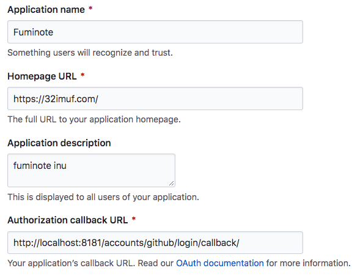-
Authorization callback URL: サービスプロバイダが認可コードを返した後に Web アプリ側にリダイレクトするための URLdjango-allauth を使う場合はサービスプロバイダによって異なる
サービスプロバイダごとに異なるビュー関数が用意されているため
-
設定値は後から Update できるよ
-
-
Admin サイトで GitHub とソーシャル連携するために初期データを登録する
# django-allauth をインストールする $ pip3 install django-allauth # マイグレーション $ python3 manage.py migrate # スーパーユーザー作成 $ python3 manage.py createsuperuser # Django アプリを起動 $ python3 manage.py runserver 0.0.0.0:8181
http://localhost:8181/admin/ へログインする
http://localhost:8181/admin/sites/site/ にレコードが1件あることを確認する
http://localhost:8181/admin/socialaccount/socialapp/ に GitHub に登録した OAuth アプリケーションの
Client IDとClient Secretを登録する
-
動作確認する
admin サイトからログアウト
GitHub からもログアウト
-
GitHub リンク押下
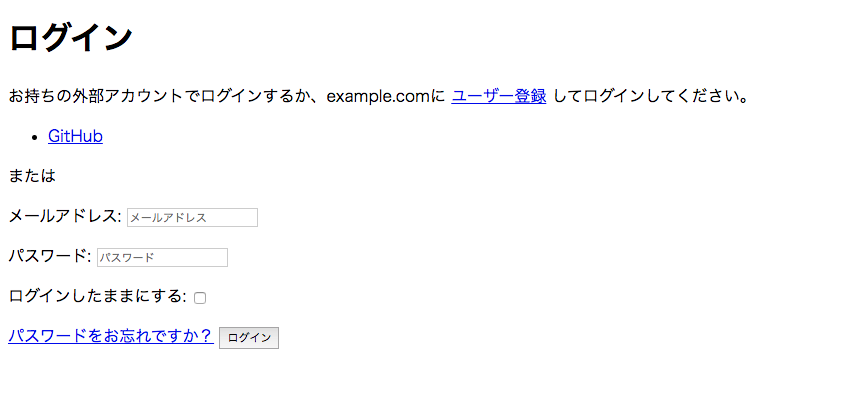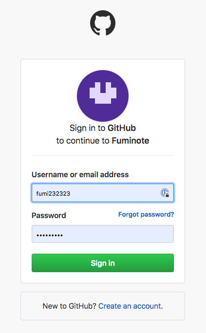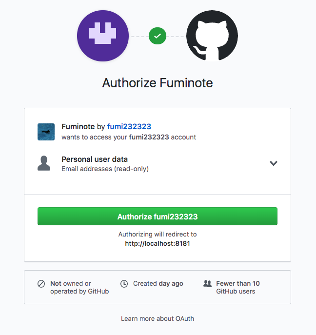-
今いま callback URL がエラーになる => メールを設定していないからかもしれない => あとでやってみる
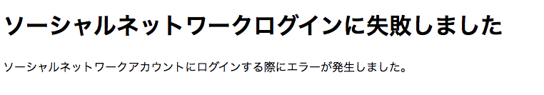
-
-
ログインできた!
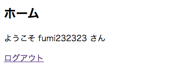
-
ソーシャル連携解除
-
http://localhost:8181/accounts/social/connections/ でソーシャル連携解除できる
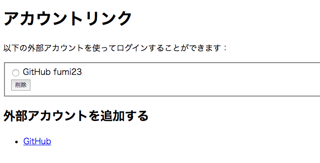
-
できあがるレコード
- auth_user
-
Django サイトのユーザー
- account_emailaddress
-
Django サイトのユーザーと Email
- socialaccount_socialtoken
-
サービスプロバイダから払いだされたトークン
- socialaccount_socialaccount
-
Django サイトのユーザーとサービスプロバイダから払いだされたトークンとを関連付けるソーシャルアカウント
サービスプロバイダから連携されたユーザー情報を保持
- socialaccount_socialapp
-
http://localhost:8181/admin/socialaccount/socialapp/ で登録したサービスプロパイダ
今回の場合だと GitHub に登録した OAuth アプリケーションの
Client IDとClient Secretを保持
- socialaccount_socialapp_sites
-
サービスプロパイダとサイトの紐付け
settings
"""
Django settings for fufu project.
Generated by 'django-admin startproject' using Django 2.2.7.
For more information on this file, see
https://docs.djangoproject.com/en/2.2/topics/settings/
For the full list of settings and their values, see
https://docs.djangoproject.com/en/2.2/ref/settings/
"""
import os
# Build paths inside the project like this: os.path.join(BASE_DIR, ...)
BASE_DIR = os.path.dirname(os.path.dirname(os.path.abspath(__file__)))
# Quick-start development settings - unsuitable for production
# See https://docs.djangoproject.com/en/2.2/howto/deployment/checklist/
# SECURITY WARNING: keep the secret key used in production secret!
SECRET_KEY = 'o=uce-pwytvkyjsg8vv12#5zvh765-w!ph==vxs#_(^nw(in$='
# SECURITY WARNING: don't run with debug turned on in production!
DEBUG = True
ALLOWED_HOSTS = ['*']
# Application definition
INSTALLED_APPS = [
'django.contrib.admin',
'django.contrib.auth',
'django.contrib.contenttypes',
'django.contrib.sessions',
'django.contrib.messages',
'django.contrib.staticfiles',
# django-allauth ######
'django.contrib.sites', # django-allauth では sites フレームワーク必須
'allauth',
'allauth.account',
'allauth.socialaccount',
'allauth.socialaccount.providers.github', # GitHub とソーシャル連携
]
MIDDLEWARE = [
'django.middleware.security.SecurityMiddleware',
'django.contrib.sessions.middleware.SessionMiddleware',
'django.middleware.common.CommonMiddleware',
'django.middleware.csrf.CsrfViewMiddleware',
'django.contrib.auth.middleware.AuthenticationMiddleware',
'django.contrib.messages.middleware.MessageMiddleware',
'django.middleware.clickjacking.XFrameOptionsMiddleware',
]
ROOT_URLCONF = 'fufu.urls'
TEMPLATES = [
{
'BACKEND': 'django.template.backends.django.DjangoTemplates',
'DIRS': [os.path.join(BASE_DIR, 'templates')]
,
'APP_DIRS': True,
'OPTIONS': {
'context_processors': [
'django.template.context_processors.debug',
'django.template.context_processors.request',
'django.contrib.auth.context_processors.auth',
'django.contrib.messages.context_processors.messages',
],
},
},
]
WSGI_APPLICATION = 'fufu.wsgi.application'
# Database
# https://docs.djangoproject.com/en/2.2/ref/settings/#databases
DATABASES = {
'default': {
'ENGINE': 'django.db.backends.sqlite3',
'NAME': os.path.join(BASE_DIR, 'db.sqlite3'),
}
}
# Password validation
# https://docs.djangoproject.com/en/2.2/ref/settings/#auth-password-validators
AUTH_PASSWORD_VALIDATORS = [
{
'NAME': 'django.contrib.auth.password_validation.UserAttributeSimilarityValidator',
},
{
'NAME': 'django.contrib.auth.password_validation.MinimumLengthValidator',
},
{
'NAME': 'django.contrib.auth.password_validation.CommonPasswordValidator',
},
{
'NAME': 'django.contrib.auth.password_validation.NumericPasswordValidator',
},
]
# Internationalization
# https://docs.djangoproject.com/en/2.2/topics/i18n/
# 日本語にするとテンプレートも勝手に日本語で表示される
LANGUAGE_CODE = 'ja'
# 英語にするとテンプレートも勝手に英語で表示される
# LANGUAGE_CODE = 'en-us'
TIME_ZONE = 'Asia/Tokyo'
USE_I18N = True
USE_L10N = True
USE_TZ = True
# Static files (CSS, JavaScript, Images)
# https://docs.djangoproject.com/en/2.2/howto/static-files/
STATIC_URL = '/static/'
##################
# Authentication #
##################
# メールアドレスとパスワードで認証
AUTHENTICATION_BACKENDS = (
# デフォルト: これを残しておくと管理画面はユーザー名/パスワードで認証できる
'django.contrib.auth.backends.ModelBackend',
'allauth.account.auth_backends.AuthenticationBackend', # django-allauth を追加
)
# 認証⽅式を 「メールアドレスとパスワード」 に変更
ACCOUNT_AUTHENTICATION_METHOD = 'email'
# ユーザー名は使⽤しない
ACCOUNT_USERNAME_REQUIRED = False
# django-allauth にはこれが必要
SITE_ID = 1
LOGIN_REDIRECT_URL = 'home'
ACCOUNT_LOGOUT_REDIRECT_URL = '/accounts/login/'
# ログアウトリンクログアウトさせたい場合 True
# (デフォルトはログアウト画面経由で POST リクエスト)
ACCOUNT_LOGOUT_ON_GET = True
# ユーザー登録時にメールアドレス確認を行う
ACCOUNT_EMAIL_VARIFICATION = 'mandatory'
# ユーザー登録時にメールアドレス確認を行わない
# ACCOUNT_EMAIL_VARIFICATION = 'none'
# ユーザー登録画面でにEmailを必須項目にする
ACCOUNT_EMAIL_REQUIRED = True
##################
# AWS settings #
##################
# 本当は settings には書かない
AWS_ACCESS_KEY_ID = 'MY-ACCESS-KEY-ID'
AWS_SECRET_ACCESS_KEY = 'MY-SECRET-ACCESS-KEY'
##################
# Email settings #
##################
# Amazon SES を使う場合
# https://pypi.org/project/django-ses/
EMAIL_BACKEND = 'django_ses.SESBackend'
# us-east-1 以外のAWSリージョンを使用する場合はこれも必要↓
# AWS_SES_REGION_NAME = 'us-west-2'
# AWS_SES_REGION_ENDPOINT = 'email.us-west-2.amazonaws.com'
DEFAULT_FROM_EMAIL = SERVER_EMAIL = 'no-reply <XXXXX@example.com>'
メールを設定した
-
callback URL はエラーにならず、
Confirm E-mail Addressメール が送られてくるようになった。Confirm E-mail Address メールが送られてくるのは、 settings に
ユーザー登録時にメールアドレス確認を行うと設定しているためですメールの設定は Django: メールを送信する を参照のこと
-
流れ
-
ログイン画面で
GitHubリンク押下する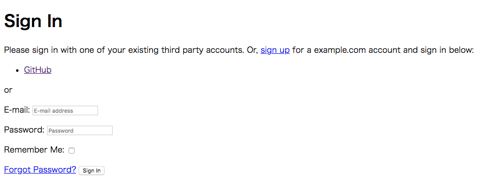 -
GitHub 側のサインイン画面へ遷移する
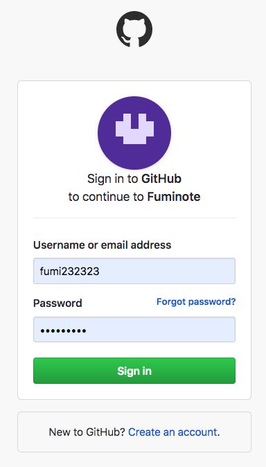 GitHub でサインインすると、自分のアプリのホーム画面へ遷移する。
-
同時に、 GitHub に登録してある Email address に
Confirm E-mail Addressメールが届く。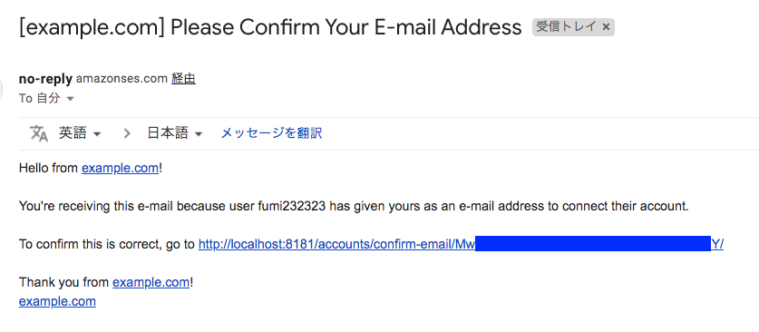 -
Confirm E-mail Addressメールに記載のリンクを押下すると、 E-mail Address 確認画面へ遷移する。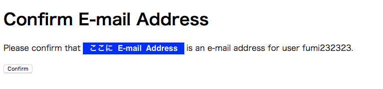 -
Confirm ボタンを押下するとホーム画面が表示される。
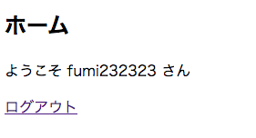
-